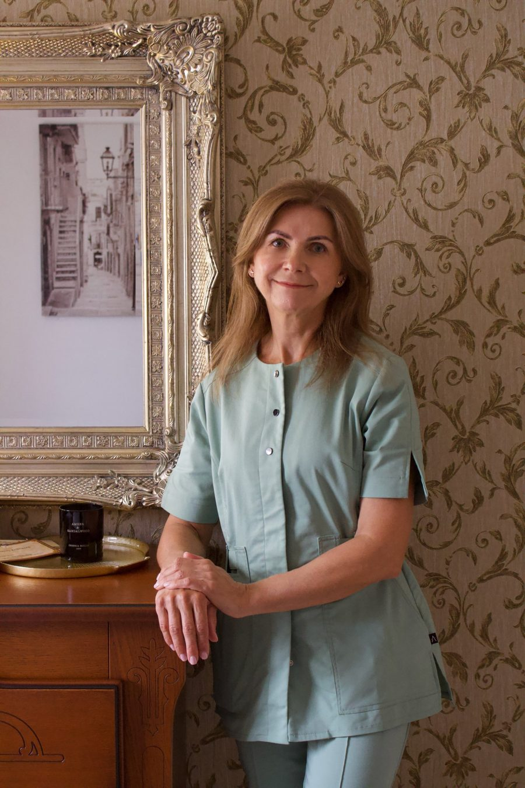

Masažo kabinetas Marijampolėje
Profesionalus masažas jaukioje senamiesčio aplinkoje
Registruotis vizitui
Senamiesčio Masažas — jaukus masažo kabinetas Marijampolės senamiestyje, netoli Kačių kiemelio. Rami, profesionali aplinka, kurioje kiekvienas vizitas tampa ypatinga patirtimi.
Naudojame tik natūralius, aukštos kokybės Thalissi aliejus — jie maloniai veikia odą ir sustiprina masažo poveikį.

Esu Laimutė Koncevičienė, kvalifikuota masažuotoja. Masažuoju daugiau nei dešimt metų ir per tą laiką supratau vieną dalyką: kiekvienas žmogus ateina su skirtingu poreikiu.
Todėl kiekvienas vizitas prasideda pokalbiu. Išklausau, ką jaučiate ir ko tikitės, pasiteirauju apie sveikatos sutrikimus ar ankstesnius negalavimus, o masažą pritaikau būtent jums. Saugumas man visada svarbiausias: techniką ir spaudimą parenku taip, kad masažas padėtų, o ne apkrautų.
Probleminėms vietoms skiriu tvirtą, gilų masažą, o tiems, kuriems reikia pailsėti, – lėtą, atpalaiduojantį. Kai reikia, abu būdai derinami viename vizite.
Man svarbi sveika gyvensena ir kūno gerovė, todėl daug dėmesio skiriu judrumui ir lankstumui. Tikiu, kad geras masažas padeda ne tik atsipalaiduoti čia ir dabar, bet ir kasdien jaustis lengviau.
Laukiu jūsų savo kabinete Marijampolės senamiestyje.
Nuosekliai išmasažuojama visa nugara, kaklas, pečiai, rankos, kojos ir pėdos.
Viso kūno masažas yra kompleksinė procedūra, kurios metu nuosekliai išmasažuojamos nugaros, kaklo, pečių, rankų, kojų ir pėdų zonos. Taikant klasikinio masažo glostymo, trynimo, minkymo ir spaudimo technikas, tolygiai paveikiami paviršiniai ir gilieji raumenų sluoksniai. Procedūra pagerina kraujo ir limfos apytaką, raumenų audinių elastingumą bei sąnarių paslankumą, padeda atpalaiduoti kūną ir nuraminti nervų sistemą. Po masažo mažėja raumenų įtampa ir nuovargis, atsiranda lengvumo pojūtis bei gerėja miego kokybė. Tinka patiriantiems nuolatinį stresą, dirbantiems sėdimą darbą, sportuojantiems bei norintiems pailsėti ir atkurti jėgas.
Prabangus lėtas masažas šildomu aromatiniu aliejumi ir natūralaus lino paklodėmis.
Tai prabangi procedūra, jungianti lėtus, plaukiančius atpalaiduojančio masažo judesius su natūraliais eteriniais aliejais. Viso kūno masažas atliekamas šildomu aromatiniu aliejumi, o švelnios, ritmingos technikos ir malonus aromatas kartu veikia ne tik raumenis, bet ir nervų sistemą. Gilus atpalaidavimas padeda sumažinti stresą ir emocinę įtampą, pagerina kraujotaką, suminkština raumenis ir sušildo audinius. Šis masažas skirtas tiems, kurie nori ne tik atpalaiduoti kūną, bet ir visiškai atsijungti nuo kasdienių rūpesčių, atgauti vidinę ramybę ir pajusti gilų poilsį. Masažas atliekamas naudojant tik natūralaus lino paklodes.
Trumpas ir efektyvus masažas visai nugarai nuo juosmens iki kaklo pagrindo.
Nugaros masažas skirtas visai nugaros sričiai nuo juosmens iki kaklo pagrindo. Taikant klasikines glostymo, trynimo ir minkymo technikas, atpalaiduojami stuburą supantys raumenys, menčių ir juosmens zonos. Procedūra pagerina kraujotaką masažuojamoje srityje, sumažina raumenų įtampą bei sustingimą ir palengvina nugaros skausmą, atsirandantį dėl ilgo sėdėjimo ar fizinio krūvio. Tinka kaip trumpas ir efektyvus atsipalaidavimas ar kaip pagalba jaučiantiems nugaros skausmą ir diskomfortą.
Nugara, pečių juosta ir sprandas – dažniausiai labiausiai įsitempiančios zonos.
Šis masažas apima dažniausiai labiausiai įsitempiančias kūno zonas: visą nugarą, pečių juostą ir sprandą. Kruopščiai išmasažuojami trapeciniai raumenys, menčių sritis ir ištiesiamieji stuburo raumenys, atpalaiduojami užsisenėję raumenų mazgeliai bei spazmai. Procedūra pagerina kraujo apytaką, sumažina įtampą pečių ir sprando srityje, palengvina galvos skausmą, kylantį dėl įsitempusių raumenų, ir didina judesių amplitudę. Didelis dėmesys skiriamas kaklo išmasažavimui. Ypač rekomenduojamas dirbantiems prie kompiuterio, vairuotojams ir visiems, kurie jaučia nugaros bei sprando sustingimą.
Lėtas pečių lanko masažas ir pėdų refleksinės zonos – nusiraminimui ir geresniam miegui.
Antistresinis masažas jungia du poilsio požiūriu svarbius derinius: pečių lanko ir pėdų masažą. Pečių, viršutinės nugaros dalies ir kaklo pagrindo zona yra ta vieta, kurioje kaupiasi stresas, todėl čia dirbama lėtais, gilesniais judesiais. Pėdų masažo metu masažuojami pėdos taškai ir refleksinės zonos, o tai skatina bendrą kūno atsipalaidavimą. Procedūra mažina nervinę įtampą, pagerina kraujotaką, padeda nusiraminti, lengviau užmigti ir atgauti energiją. Tinka patiriantiems nuolatinį stresą, nuovargį, įtampą ar nerimą.
Gilaus atpalaidavimo masažas šildomu aromatiniu aliejumi ir natūralaus lino paklodėmis.
Tai gilaus atpalaidavimo procedūra, kurios metu nugaros, pečių ir kaklo zonos masažuojamos šildomu aromatiniu aliejumi. Lėtos, plaukiančios technikos derinamos su gilesniu raumenų apdirbimu: taip pašalinama įtampa ir pagerinama audinių mityba. Natūralūs eteriniai aliejai pasižymi raminamuoju poveikiu, todėl masažas veikia ne tik raumenis, bet ir padeda nusiraminti, sumažina stresą bei gerina nuotaiką. Po procedūros jaučiamas lengvumas, šiluma ir ramybė. Rekomenduojamas tiems, kurie nori kokybiško poilsio ir išskirtinio dėmesio sau. Masažas atliekamas naudojant tik natūralaus lino paklodes.
Išskirtinė technika kaukolės, kaklo ir menčių zonoms – laisvesniam kaklui ir lengvesnei galvai.
Cerviko - Kranialinis kaklo masažas yra išskirtinis savo technika. Ši technika skirta kruopščiai išmasažuoti kaukolės, kaklo, bei mentės zonas. Kiekvienam kaklo zonos slanksteliui atliekamos mobilizacinės manipuliacijos, naudojamos manualinėse praktikose: fleksijos, ekstenzijos, rotacijos ir t.t.. Šis kruopštus išmasažavimas pagerina kraujo cirkuliaciją masažuojamoje zonoje, raumenų audinių elastingumą ir kaklo paslankumą. Minkštas ir delikatus kaklo ir pečių juostos raumenų apdirbimas greitai nuima bendrą įtampą, dingsta skausmas galvoje, pagerėja buvęs ribotas kaklo paslankumas, bei užsisenėję spazmai. Ši metodika yra gera kaklo srities stuburo osteochondrozės profilaktika.
Kruopštus kaklo ir menčių zonos masažas skausmui, tirpimui ir sustingimui mažinti.
Kaklo ir pečių srities masažas. Kruopštus kaklo ir menčių zonos išmasažavimas pagerina kraujo cirkuliaciją masažuojamoje zonoje, raumenų audinių elastingumą ir kaklo paslankumą. Pagalba, jaučiantiems skausmą, rankų tirpimą ar galvos svaigimą.
Juosmuo ir visos kojos – lengvesnėms, mažiau pavargusioms kojoms.
Šio masažo metu dirbama su juosmens sritimi ir visomis kojomis: šlaunimis, keliais, blauzdomis ir pėdomis. Taikant minkymo, trynimo ir glostymo technikas, mažinama raumenų įtampa, pagerinama kraujotaka ir limfos nutekėjimas, palengvinamas kojų sunkumas bei nuovargis. Procedūra padeda atpalaiduoti juosmens raumenis, kurie dažnai įsitempia dėl ilgo sėdėjimo ar stovėjimo. Tinka dirbantiems stovimą ar sėdimą darbą, sportuojantiems, aktyviai judantiems ir jaučiantiems kojų pavargimą.
Pavargusioms, sunkioms ar patinusioms kojoms – pėdų refleksiniai taškai ir blauzdos.
Pėdų ir blauzdų masažas skirtas pavargusioms, sunkioms ar patinusioms kojoms. Kruopščiai išmasažuojamos pėdos, čiurnos ir blauzdų raumenys, aktyvuojami refleksiniai taškai pėdose. Procedūra pagerina kraujo ir limfos apytaką, sumažina tinimą, raumenų įtampą ir nuovargį, o kojos tampa lengvesnės. Be to, pėdų masažas teigiamai veikia bendrą savijautą ir padeda atsipalaiduoti. Rekomenduojamas ilgai stovintiems, avintiems aukštakulnius, daug vaikštantiems ar sportuojantiems.
Pirštai, delnai, dilbiai, žastai ir pečių sritis – rankų nuovargiui ir tirpimui mažinti.
Rankų masažo metu nuosekliai išmasažuojami pirštai, delnai, dilbiai, žastai ir pečių sritis. Taikant švelnias, bet kruopščias technikas, mažinama raumenų įtampa, gerinama kraujotaka ir sąnarių paslankumas, palengvinamas rankų nuovargis bei tirpimas. Procedūra ypač naudinga daug dirbantiems kompiuteriu, rašantiems, dirbantiems rankomis ar sportuojantiems, nes padeda sumažinti riešų ir dilbių įtampą. Tai maloni ir atpalaiduojanti procedūra, suteikianti lengvumo pojūtį.
Galima įsigyti dovanų kuponus
„Masažas buvo gilus, tikslus ir tvirtas. Labai rekomenduoju!"
Gedimino g. 2
Marijampolė, 68306
II–V: 10:00–18:00
VI: 10:00–13:00
I, VII: Nedirbame